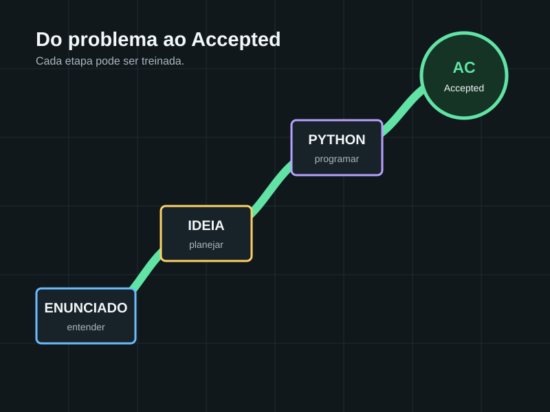

Curso introdutório · Python 3
Maratona de Programação com Python
Do primeiro print ao primeiro Accepted. Aprenda a interpretar enunciados, construir algoritmos, testar soluções e resolver problemas reais do beecrowd.

Progressão
Uma habilidade prepara a próxima
O curso começa pelo funcionamento da competição e avança até combinar decisões, repetições, funções, coleções, matemática e análise de dados.
Aulas
Trilha completa
Cada aula inclui explicação, exemplos, laboratório interativo, erros comuns, desafio e fontes para aprofundamento.
Prática
Listas de exercícios
As páginas não substituem a tentativa: abra o enunciado oficial, resolva e só depois compare o raciocínio.
Aprofundamento
Material de estudo
Fontes oficiais para regras e referências completas para teoria, Python e prática competitiva.
Fontes verificadas
Regras e catálogos
As regras variam por edição; use sempre os documentos oficiais mais recentes ao se inscrever.